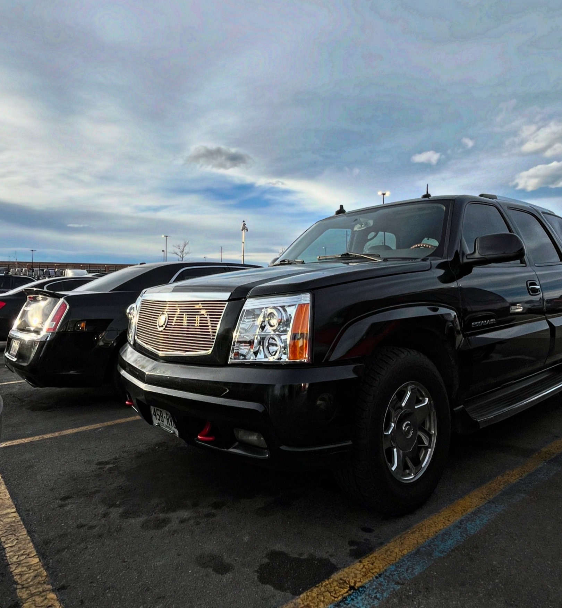
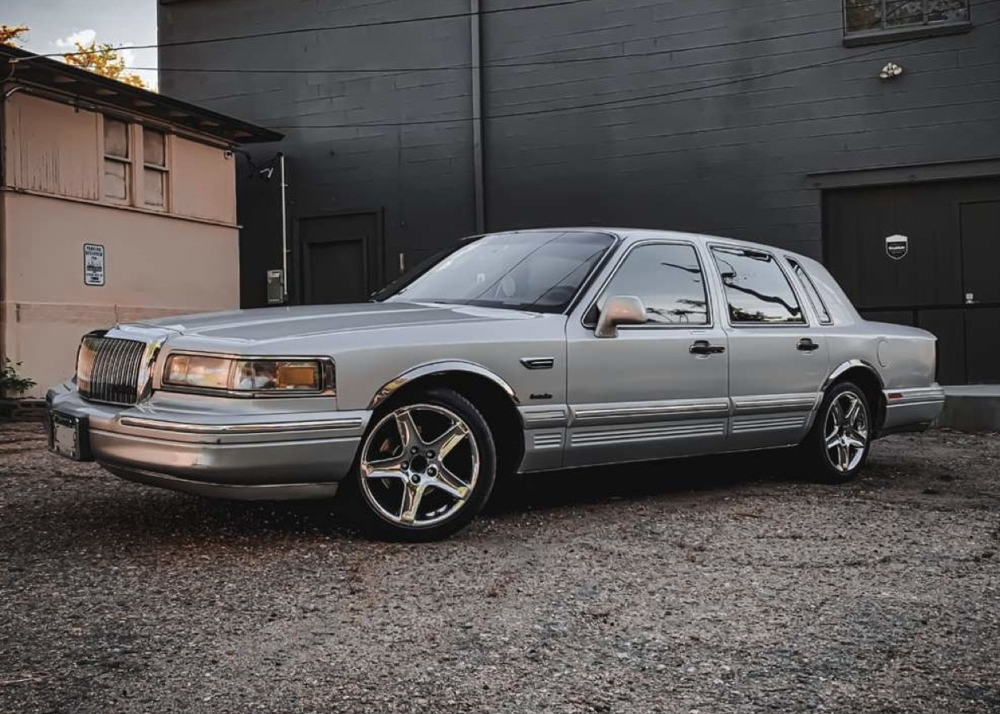

About me

Hi, I’m Benito - a college student at the Metropolitan State University of Denver and a Surface Mount Technician at Advanced PCB, driven to contribute to the world of Manufacturing and Engineering. My passion for science and design has enabled me to apply my technical skills to my personal projects, academics, and career, all of which have contributed to my development as a manufacturing engineer and a valuable member of society.
Academics
Whether it’s learning a trade or earning a degree, getting an education is key to achieving success in life, which is why I’ve always been committed to continuous learning.
- Associate of Science (Community College of Aurora) – Completed May 2023
- Advanced Manufacturing Certificate (Pickens Technical College) – Completed May 2021
They say you can’t teach an old dog new tricks, but in a rapidly evolving world, the dog just might have to.
Hobbies
I also have a passion for automobiles, specifically car modifying. Many people view cars as a simple means of transportation to get from point A to point B, but I prefer to see them as an extension of the owner. A car can be a canvas where you can express yourself, make a statement, or make yourself known.Read more
- Project- Cadiilac Escalade: 
- Project- Lincoln Town Car 
Career
This is a plain div styled as a surface. Read more